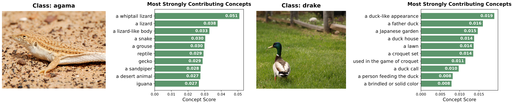
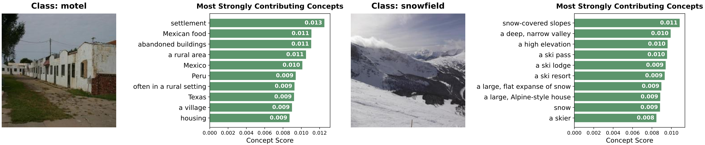
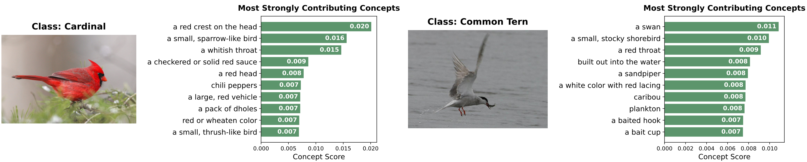
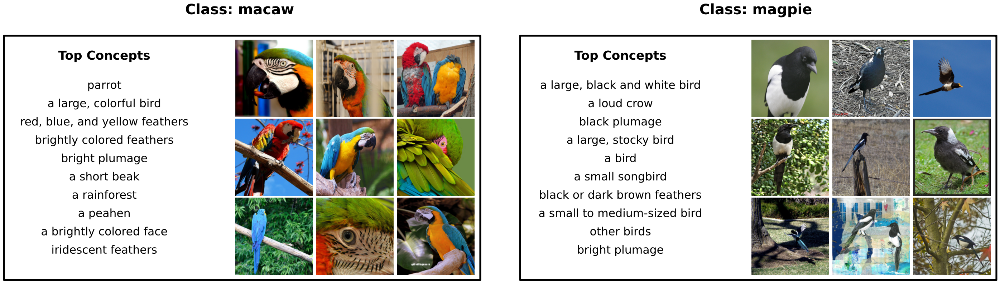
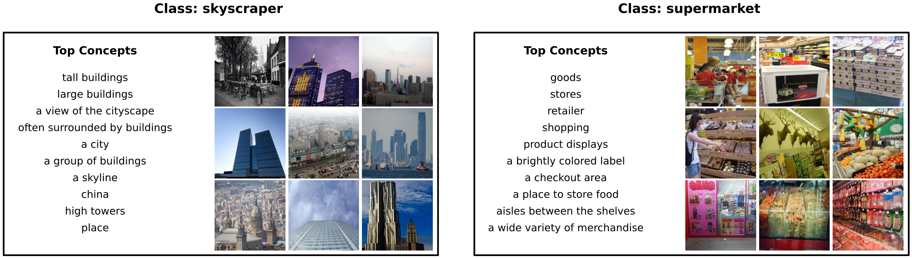
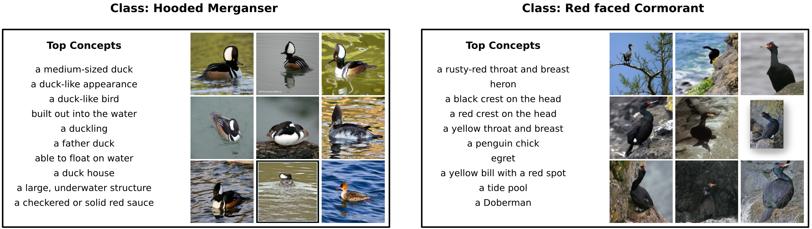

Quantitative Results
We evaluate EZPC on five benchmark datasets (CIFAR-100, ImageNet-100, CUB, ImageNet-1k, and Places365) under the generalized zero-shot setting. EZPC maintains strong performance close to CLIP while providing concept-level explanations, and outperforms prior explainable zero-shot methods such as Z-CBM and SpLiCE. These results show that projecting CLIP embeddings into a concept space preserves semantic structure without sacrificing accuracy.
| Model | CIFAR-100 | ImageNet-100 | CUB | ImageNet-1k | Places365 | ||||||||||
|---|---|---|---|---|---|---|---|---|---|---|---|---|---|---|---|
| Seen | Unseen | H | Seen | Unseen | H | Seen | Unseen | H | Seen | Unseen | H | Seen | Unseen | H | |
| CLIP | 0.370 | 0.454 | 0.408 | 0.680 | 0.707 | 0.693 | 0.468 | 0.481 | 0.474 | 0.513 | 0.548 | 0.530 | 0.350 | 0.375 | 0.362 |
| Z-CBM | 0.319 | 0.425 | 0.365 | 0.592 | 0.579 | 0.585 | 0.183 | 0.195 | 0.189 | 0.439 | 0.486 | 0.462 | 0.349 | 0.365 | 0.357 |
| SpLiCE | 0.248 | 0.298 | 0.270 | 0.371 | 0.409 | 0.389 | 0.100 | 0.053 | 0.070 | 0.275 | 0.331 | 0.300 | 0.276 | 0.288 | 0.282 |
| EZPC | 0.365 | 0.449 | 0.403 | 0.675 | 0.690 | 0.682 | 0.457 | 0.473 | 0.465 | 0.468 | 0.494 | 0.481 | 0.339 | 0.366 | 0.352 |
Table 1. Generalized zero-shot classification accuracy (Seen, Unseen, Harmonic mean). EZPC achieves performance close to CLIP while remaining interpretable.
Qualitative Results
We present qualitative examples illustrating the interpretability of EZPC. The visualizations illustrate explanations for individual predictions, class-level concept statistics, and the structure of the learned concept space. These results demonstrate that EZPC provides faithful and human-understandable explanations while preserving the semantic behavior of CLIP.



Figure 1. Image-level explanations showing the most contributing concepts for each prediction.



Figure 2. Class-level concept distributions across multiple samples.


Figure 3. Concept clustering in the learned concept space, showing semantic grouping without image supervision.
Acknowledgments
We acknowledge the computational resources provided by METU Center for Robotics and Artificial Intelligence (METU-ROMER) and TUBITAK ULAKBIM TRUBA. Dr. Alaniz is supported by Hi! PARIS and ANR/France 2030 program (ANR-23-IACL-0005). Dr. Akata acknowledges partial funding by the ERC (853489 - DEXIM) and the Alfried Krupp von Bohlen und Halbach Foundation. Dr. Akbas gratefully acknowledges the support of TUBITAK 2219.
BibTeX
@inproceedings{ozdemir2026ezpc,
title = {Explaining CLIP Zero-shot Predictions Through Concepts},
author = {Ozdemir, Onat and Christensen, Anders and Alaniz, Stephan and Akata, Zeynep and Akbas, Emre},
booktitle = {Proceedings of the IEEE/CVF Conference on Computer Vision and Pattern Recognition (CVPR)},
year = {2026}
}